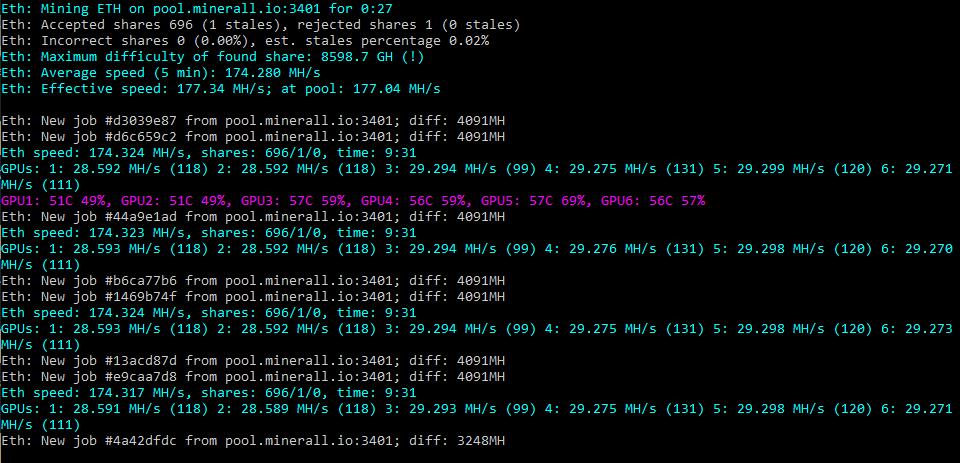

Самый быстрый Ethereum/Ethash майнер с самой низкой комиссией
19.30-934563 для майнинга с картами RX5700 под Linux. Обратите внимание, что драйверы довольно глючные, и большинство опций разгона не работают, как и большинство опций аппаратного мониторинга.-cclock 1-3:1090,4:1300 -mclock nvidia:+450,amd:2000,*:1900,gtx*1070*ti:+200Для получения дополнительной информации см. ниже.
19.11.1 (но они уже работают с 4.8b, поскольку в драйвере OpenCL не было значительных изменений)О драйверах AMD Linux 19.30-934563:
Эти драйверы, наконец, решают проблему с TLB RX5700, но они не идеальны:
-powlim -45. Опции управления вентилятором тоже не работают, поэтому вы будете полагаться на авто-вентилятор.О новых селекторах, специфичных для GPU опций:
Это лучше всего объяснить на примере: -cclock *:1100,1-3:1090,4:1300 - здесь мы устанавливаем тактовую частоту ядра 1100 МГц для всех карт, кроме карт с 1 по 3, на которых установлено на 1090 МГц, а карты от 4 - 1300 МГц.
Часть перед двоеточием: является селектором, который выбирает видеокарты, для которых применяется значение после двоеточия.
Селектор может быть:
5:1000 устанавливает 1000 для 5-го GPU2-5: 1200 устанавливает 1200 для видеокарт 2,3,4 и 5amd или nvidia: например, amd:1090 устанавливает значение 1090 для всех карт AMDgtx*1070:+500 установит значение +500 для всех карт, в именах которых есть «gtx» и «1070», между которыми есть какие-нибудь знаки. Это будет соответствовать «Nvidia GeForce GTX 1070», но не «Nvidia GeForce 1070».Обратите внимание, что если данной карте соответствует более одного селектора, учитывается только последняя карта. Пример: -cclock *:1100,1-4:1090,2:1300 установит карту 2 в 1300; карты 1, 2 и 4 до 1090; а остальные карты с частотой ядра 1100 МГц.
 PhoenixMiner
Ресурсы для разработчиков